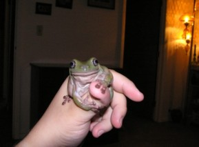
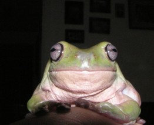
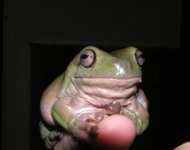
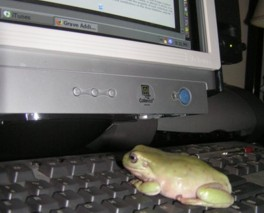
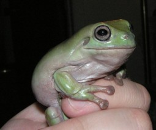

I have received several questions about the site and about me, so I have decided to take any questions that people have asked me 5+ times and post them here, along with my answers. I've tried to keep them in order, with the most popular questions listed first.
No, not really. I just think cemeteries contain a lot of history and beautiful artwork, that's why I explore them. However, like most people I do find death interesting to think about. But no, I don't obsess about it.
I wish! No, the website is just a hobby, something I like working on in my
spare time. I work for a large corporation here in Columbus, in an IT/Systems area. I'm a Senior Analyst, and I do software testing. Overall, it's a pretty cool job!
I'm a 27 year old Taurus.
I've always been fascinated with cemeteries and ghost related stuff. My mom used to tell me ghost stories when I was a kid, and I loved them! I decided to start the site in January of 2003 to share my photos and stories with other people who are interested in this stuff too.
I have two cameras that I use:
I have an old Sony M-427 microcassette recorder that I use occasionally, but for the most part I use my two digital voice recorders since the recordings turn out clearer:
Well, it really depends on where I'm going. Here's a list of everything I might possibly take though:
I honestly don't think there is anything wrong with using digital cameras for ghost hunting. A lot of paranormal researchers are against them, however I believe that as long as a person doesn't consider every single white spot in a photo to be an orb (a lot of digitals pick up dust, etc) it's OK to use them.
I went to William V. Fisher Catholic High School in Lancaster, Ohio. I graduated in 1997.
I honestly don't think I could pick a favorite. I've enjoyed visiting all of the cemeteries on my site, and each one has something unique about it that makes it special. If I had to pick just one, I guess I'd pick Bright Cemetery in Baltimore, Ohio. It's one of the first cemeteries I ever explored so it holds a special place in my heart :) I have a list of my top 50 favorite cemeteries listed off the main cemetery page.
My scariest experience was definitely at Elisabeth's Grave in Chillicothe, Ohio. I experienced some strange car problems there, you can read about it on that page. My experience at Lakin Hospital was also pretty creepy (again, check out the page to read about it).
I spent three semesters at Eastern Michigan University in Ypsilanti, Michigan. But yes, the rest of my life has been spent in the Central Ohio area.
Yes, I am a member of MAJDA, The United Paranormal Investigators Association (UPIA), and the Ohio EVP and Paranormal Society...they're all terrific groups!
They're not ghosthunting groups, but I'm also a member of the Ohio Historical Society and The Association For Gravestone Studies.
Of course I do! I enjoy gardening, cooking, and reading. I also collect antique/vintage glassware and old photos (especially post mortem and funeral related ones). I really enjoy going to flea markets, antique stores, and auctions. I'm also an eBay addict :)
I was raised Catholic, but no, I don't attend church now. I think the label that best fits my beliefs would be secular humanist.
No, what's so bad about believing in ghosts anyway? It doesn't hurt anyone/anything.
No, I went to Eastern Michigan University for three semesters and DeVry for three trimesters. I haven't finished my degree yet, but I plan to get a degree in Computer Information Systems someday.
No to both questions! Thinking about death doesn't depress me, and honestly, I don't even think about death when I visit cemeteries. The only depressing moments I ever experience at cemeteries is a sadness at how vandalized some of them are. I think vandalizing cemeteries is awful, and I don't understand why some people think it's fun.
No...and hopefully I never will!
First, I don't use Frontpage...it generates too much worthless code. I use a simple html editor called Araneae. I highly recommend it - it's simple, but it has some cool features. I really like the syntax highlighting that color codes my tags, the line numbers, and the color chart that I can use to find the hex code for any color.
As far as FTP software, I use FTP Explorer...you can download it at http://www.ftpx.com. It's really easy to use, it's just like your Windows Explorer/File Manager.
I've also used a few other tools:
I used to have a frog site, www.hoppytogether.com, but I cancelled it in May 2003. I just wasn't having fun with it anymore - mainly because too many animal rights activists were attacking me. I still have a pet frog though. His name is Ted, and I've had him since January 2002...here are a few pictures:






Where do you want to go? Select your destination: